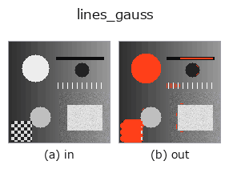

contour op• Data kinds: image → contour
• Call: fullseye.apply(img, "lines_gauss", a=0.5, b=0.5) (2-D model = एक image + दो scalar knobs a,b∈[0,1])
• HALCON समकक्ष: lines_gauss (अर्थ और parameters समझने के लिए HALCON reference उपयोगी है)
• GPU: नहीं (केवल CPU reference implementation)

*Figure synthetic 128×128 input पर सच में चलाकर मिला output है। बाईं ओर input, दाईं ओर output। Point clouds ऊपर से देखे गए scatter के रूप में (brightness = z), 1-D series line के रूप में, volumes z दिशा में maximum-intensity projection के रूप में, videos बीच के frame के रूप में, complex images amplitude के रूप में, और जो return values चित्र नहीं बन सकते वे स्वयं values के रूप में दिखाए जाते हैं।*
Knob a को बदलकर (0.1 / 0.5 / 0.9, दूसरा knob default पर):
▸ lines_gauss: knob a को बदलने का figure (docs site)
Knob b को बदलकर (0.1 / 0.5 / 0.9, दूसरा knob default पर):
▸ lines_gauss: knob b को बदलने का figure (docs site)
दूसरी images पर भी (synthetic scene / photo / coins। ऊपर की row में inputs, नीचे की row में उनके outputs। Knobs default पर):
▸ lines_gauss: दूसरी images पर output (docs site)
*चौथा column colour (H,W,3) input है। यह op channels को पार किए बिना colour संभालता है (colour channel को तीसरे spatial axis की तरह convolve नहीं करता)।*
रेखीय संरचना (ridge) detection। skimage.filters.frangi (रक्त वाहिका जैसी ridges उभारने वाला filter) के response को threshold (0.1+0.4*a) से binarise करके connected components को contour point sets के रूप में लौटाता है। HALCON का lines_gauss (Detect lines and their width.) मूल रूप से जो "रेखा की center line + चौड़ाई का अनुमान" करता है वह नहीं, बल्कि ridge-enhanced image के thresholding तक सरल किया गया है (रेखा की चौड़ाई की जानकारी नहीं लौटती, यह सन्निकटन है)।
★डिफ़ॉल्ट (b < 0.75) कंटूर सीमा से ऊपर की पट्टी के पिक्सेलों का समूह है, np.where के रास्टर क्रम में, रेखा के साथ क्रमबद्ध नहीं —— length_xld जैसी बिंदु-क्रम पर निर्भर मात्राएँ अर्थहीन हैं (2 px चौड़ी, 40 / 60 px लंबी खरोंच में length_xld 117 / 177 px)। रेखा की लंबाई या आकार मापने के लिए b >= 0.75 का केंद्र-रेखा मोड इस्तेमाल करें: पट्टी को पतला करके रेखा के साथ क्रमबद्ध करता है, और हर बिंदु को Steger (1998) के सूत्र (σ = 1.5 px के गॉसियन अवकलज, हेसियन की लंब दिशा में चमक के चरम तक) से सब-पिक्सेल रेखा-केंद्र पर ले जाता है (HALCON की केंद्र-रेखा के समतुल्य; रेखा की चौड़ाई अब भी नहीं लौटती; पतला करने से सिरे लगभग आधी चौड़ाई सिकुड़ते हैं)।
a रिज-पहचान की सीमा बदलता है। b >= 0.75 पर केंद्र-रेखा मोड (डिफ़ॉल्ट 0.5 पट्टी के पिक्सेल देता है)। scikit-image न होने पर MissingDependencyError (क्या इंस्टॉल करना है बताते हुए) से रुकता है —— कोई दूसरा उत्तर नहीं देता।
ध्रुवता भी नहीं लौटाता (माप 2026-09-15): चमकीली पृष्ठभूमि पर गहरी रेखा (0.6 पर 0.1, 2 px चौड़ी) और गहरी पृष्ठभूमि पर चमकीली रेखा (0.6 पर 1.0) को एक ही a से देने पर दोनों में कंटूर निकलते हैं (a=0.5 पर 3 कंटूर / 280 बिंदु और 3 / 276) और परिणाम से अलग नहीं किए जा सकते। केवल गहरी रेखाएँ चाहिए तो पहले bothat लगाएँ (श्वेत टॉप-हैट tophat गहरी रेखाओं पर 0 देता है), केवल चमकीली रेखाएँ तो पहले tophat। चौड़ाई मापने का रास्ता दूसरा op है: gen_measure_rectangle2 से रेखा के लंबवत माप-रेखाएँ बिछाएँ और measure_pairs (measure1d परिवार) से दोनों किनारे लें। पर 1〜3 px चौड़ाई उस op का जोखिम क्षेत्र है (किनारों की दूरी / PSF चौड़ाई < 3.09 पर बड़ी ओर झुकता है), इसलिए सब-पिक्सेल चौड़ाई चमक की कमी के समाकलन से मापें (examples/example_scratch_width.py, poc_crack_width)। कब क्या इस्तेमाल करें, इसकी तालिका 2d/guides/gallery2d_contour_measure.md में है।
• gallery2d_contour_measure family guide
• Sample data catalog (DL URL / license) — 2-D के लिए skimage.data (BSD/public) + synthetic, 3-D के लिए real data sources (Stanford/PDS आदि) के DL URL।
• Operators का स्रोत और संदर्भ — इस op family के मूल research/methods के स्रोत।
• Algorithm का मानक स्रोत (लेखक, वर्ष) और उपयोग ऊपर की family usage guide में दिए गए हैं।
नीचे का program सच में चलता है, यह जाँचा गया है (figure वाला ही input)। Studio की help में यह block buttons बन जाता है, जिनसे इसे वहीं load करके चलाया जा सकता है।
lines_gauss 0.50 0.50
▸ यह pipeline load करें · Load करके चलाएँ
• example_scratch_width — py -3.11 examples/example_scratch_width.py
• gallery2d_contour_measure — py -3.11 examples/gallery2d_contour_measure.py
• poc_solar_el_inspection — py -3.11 examples/poc_solar_el_inspection.py
• poc_weld_bead_scan_angle — py -3.11 examples/poc_weld_bead_scan_angle.py
contour को input के रूप में लेते हैं)identity · select_contours · smooth_contours · fit_line_contours · contours_to_region · count_contours · total_length · select_contours_xld
contour)select_contours · smooth_contours · fit_line_contours · contours_to_region · sk_find_contours · edges_sub_pix · select_contours_xld · smooth_contours_xld
*Provenance: ops.py — 2D operator registry. यह per-op note tools/opdocs.py md से अपने-आप generate होता है (हाथ से edit न करें)।*
© 2026 Kazufumi Furuse — Fullseye operator documentation. Licensed under Apache-2.0.